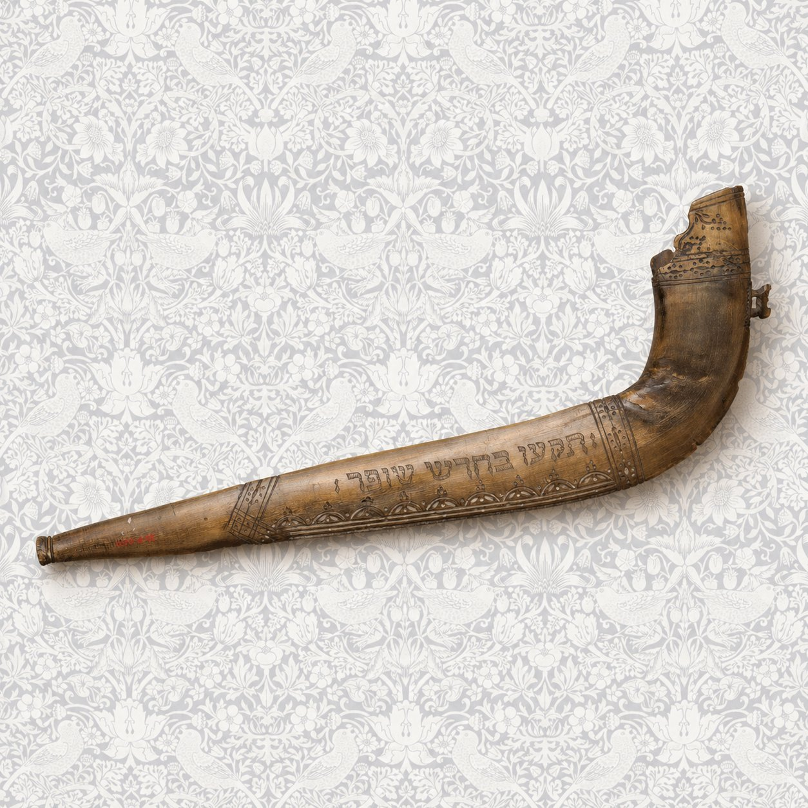
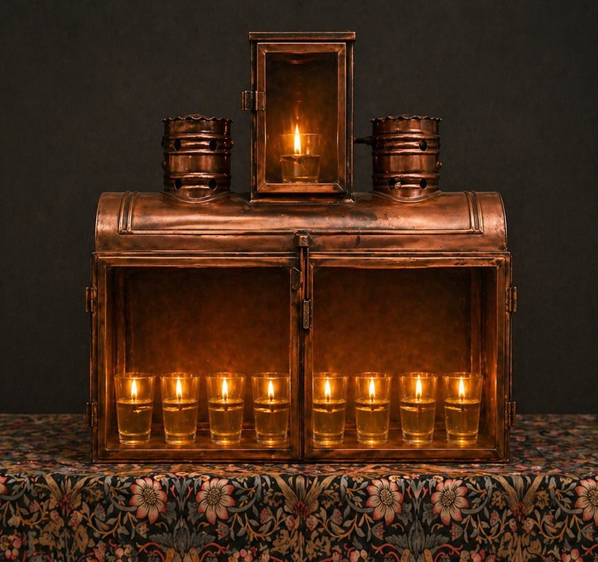
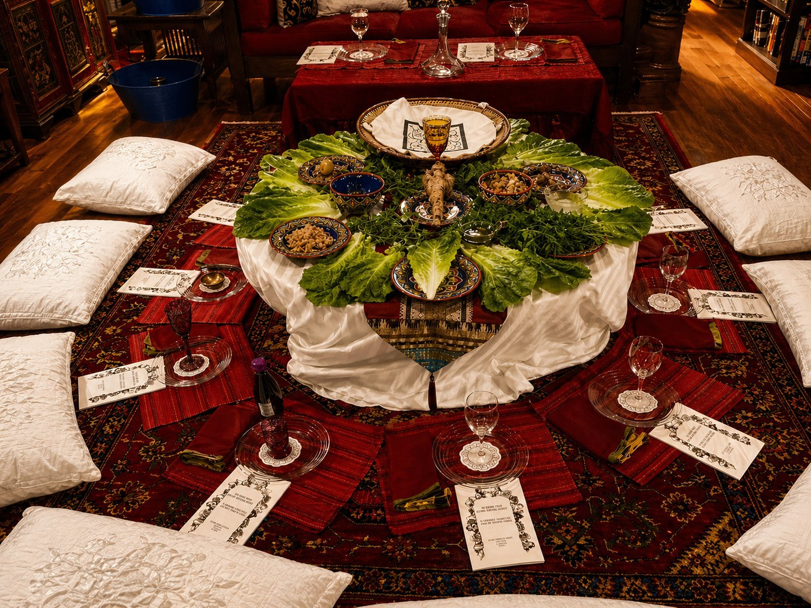
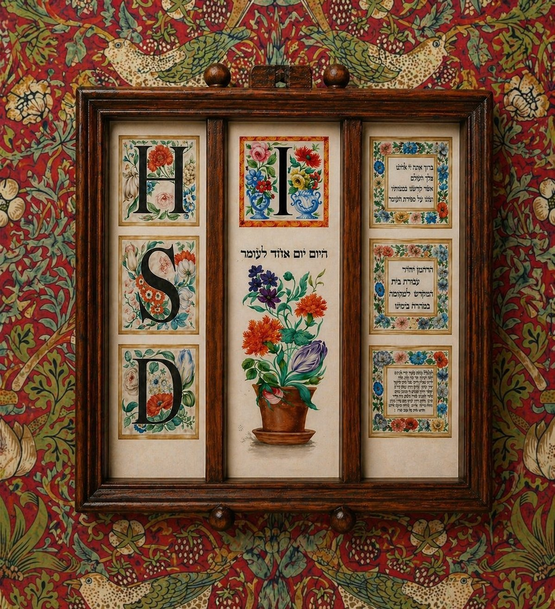

The Year
Come celebrate with us.
The High Holidays in the fall,
Hanukkah in the winter,
Passover in the spring.
Be in touch if you want a seat at our table.

High Holidays

Hanukkah

Passover

Counting the Omer
The community gathers for festivals, fast days, and the cycle of the Jewish year.
Write to us for the schedule and to reserve a place at the table.